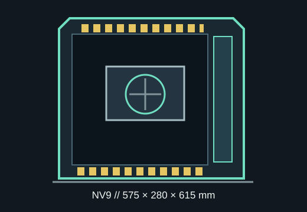

[ MODEL IDENTIFICATION // PHANTEKS NV9 ]
Phanteks NV9
The full-tower NV9 measures 575 × 280 × 615 mm and supports up to 490 mm GPU length, 205 mm CPU-cooler height and a multi-420 mm cooling layout.

MODEL BOUNDARY: Original NV9 chassis, SKU PH-NV923TG_DBK01 in the official listing; do not confuse it with NV9 MKII or RGB upgrade kits.
Dimensions & fit specifications
| External dimensions | 575 × 280 × 615 mm (D × W × H); full-tower form factor. |
|---|---|
| Motherboards | E-ATX up to 280 mm wide, ATX, microATX and Mini-ITX. |
| GPU / CPU cooler / PSU | GPU up to 490 mm long and 205 mm wide; CPU cooler height 205 mm; PSU length up to 210 mm. |
| Radiators | Top, side and bottom support radiators up to 420 mm; rear supports up to 280 mm. The NV9 is designed for three 420 mm radiators plus one 280 mm radiator simultaneously, subject to fit in the official layout. |
| Drive bays | Six 2.5-inch positions and three 3.5-inch bays; two 2.5-inch SSDs can share the specified 3.5-inch cage positions (24 mm HDD height limit when SSDs are installed). |
| Expansion | Eight horizontal slots and up to three-slot vertical GPU support; riser is separate. |
Compatibility & preservation
NV9 radiator totals are layout-dependent: test tank length, side radiator thickness (up to 154 mm-wide assembly in Phanteks' spec table), fans, tube turns, RAM and motherboard heatsinks together. Its 210 mm PSU limit is modest for a full tower, so confirm modular-cable clearance as well.
- Preserve airflow covers, radiator brackets, drive cage, GPU bracket and all accessory fasteners.
- Measure GPU width and power plug clearance as well as card length; published limits do not account for every power-cable bend.
- Verify case SKU before using an NV9 MKII or revision-specific manual.
Manufacturer sources
- Phanteks — NV9 product specificationsManufacturer source for dimensions, bays, component clearances and radiator support.
- Phanteks — NV9 manual, revision 1.1 (PDF)Official assembly guide and cooling-layout reference.